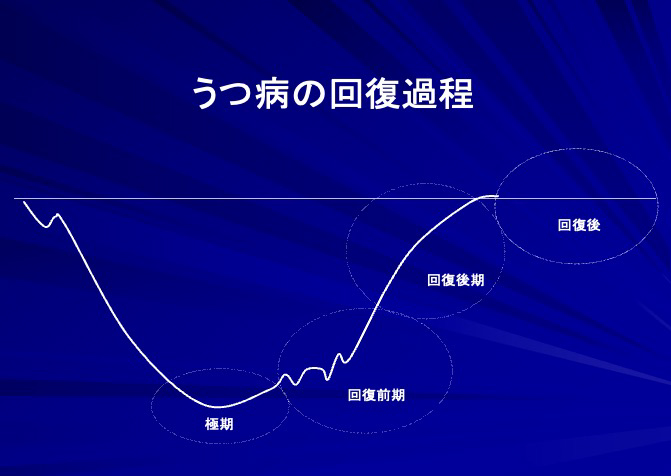

社交不安症（対人恐怖）
社交不安症は、対人恐怖症、赤面恐怖症などと呼ばれていた不安症のひとつで、他人にどう思われているかが過剰に気になる特徴があります。
人と話すときに、顔が赤くなる、言葉に詰まってうまく話せないといった症状や、他人が自分を変だと思っているのではないか、不快に感じているのではないかと心配になるなどの症状がでて、次第に人との関りを避ける状態になります。
こうした対人関係の不安の裏には、共通点があり、人より優れていたい、受け入れられたいという欲望、その裏返しが、悪く思われるのではないか、受け入れられないのではないかという恐れがあります。羞恥への恐怖とも言い換えられます。自分に対する評価が気になり、不安を増幅してしまいます。
人は誰でも、人によく思われたいと願っており、その分悪く思われないかという不安を持っています。時に上がってしまうことや、緊張することは誰にでもあることです。しかし社交不安症の人は、そのような緊張や不安があってはいけないと考えます。
森田療法では、不安や羞恥はそのままに、生活に必要なコミュニケ―ションを取るという行動を優先させます。「ハラハラドキドキ」しながら人との関りを避けず、行動していくことを促していきます。
強迫症（強迫観念と強迫行為）
不安や不快なことにせきたてられ、そのような不安や不快を打ち消すための行動を繰り返さずにはいられないのが強迫症です。その根幹には、悪い結果に対する恐れ、人に迷惑がかかったり、自分が悪い状況に陥ったりしたくないという完全主義があります。
強迫症には、汚染に対する恐怖、ミスや間違いに対する恐怖など、さまざまな恐怖がありますが、すべて、万が一の悪い結果に対する過剰な思い込みが原因です。
森田療法では、強迫症に対し、その対処が必要かどうか疑問を持つことを治療の手がかかりとします。手を洗い続ける、同じことを確認し続けるといった行動（強迫行為）が、本当に効果をあげているのか考えることから始めます。手洗いを確認すればするほどかえって不確かに感じ、ますます行動を繰り返すことになるという悪循環に目を向けていきます。さらに、その行動が生活を圧迫しているということに気づいていくことも大事になります。
実際、起こらない悪い事態を考えては、可能性を排除しようとする姿勢が「とらわれ」の原因になっていることに気づいていくことも大事になります。手洗いや確認をやめても問題は起こらず、その時間のエネルギーが健全な生活にプラスになることを知り、不安はそのままでも、よりよく生きたいという「生の欲望」が活かされることを理解することが重要になります。
一般に強迫症に対する森田療法では具体的な行動指導が重要であり、以下の点がポイントになります。
- 不安を強迫行為で打ち消そうとせず、そのままにおく。せめて一拍、間をおく。
直ちに強迫行為をやめるのは難しくても、不安を感じるやいなやすぐさま打ち消しに走らず、行為に移るまでに間をおくよう助言していくのです。 - 行動の転換をすばやくする。時間を「物差し」にする
すっきりするまで強迫行為を続けるというパターンから脱却して、不快な気分を残したまま次の行動に移るよう指導します。強迫行為を切り上げる目安として、たとえば5分間という時間を定めるのもひとつの方法です。その他、回数や頻度など強迫行為の内容に応じて目安を設けると良いでしょう。 - 全か無かのパターンに陥らず、ほどほどのやり方を探る。行動をゼロにしない
多くの患者さんは、強迫的な完全主義のために100かゼロかの行動パターンになりがちです。また完全を求めるがゆえになかなか物事に着手することができず、行動範囲は狭くなりやすいのです。そこで30，40でもいいからゼロにせず行動すること、尻軽くテキパキと動き、何でも目前のことにすっと手を出していくよう指導することが大切になります。 - 臨機応変を心がける
たとえば入院治療において、「かくあるべし」にとらわれた患者さんが庭木の水遣やり当番になると、雨が降っていても水遣やりをする、といったことが実際に起こります。したがって、そのつどの状況をよく見て、それに応じた柔軟な行動を取るように助言することが必要なのです。 - 症状の有無ではなく、目的が果たされたかどうかを行動の基準におく（目的本位）
たとえば買い物に際して、患者さんの注意は症状が出現したか否かという点に向かいがちです。森田療法においては、症状の有無に関わらず必要な買い物ができれば成功、というように、本来の目的が実現されたかどうかを行動の基準にするよう助言がなされます。
パニック症
パニック症の患者さんへの森田療法的アプローチでは、以下のことがポイントになります。
- パニック症に関する疾患教育を実施する
治療を始めるに当たり、パニック発作は急激な自律神経の緊張が特徴であること、しかしたいていの患者さんが恐れるような卒倒やコントロールの喪失、まして心停止、死に至ることはあり得ないこと、また通常はそのままにおいても数分から数十分のうちに自然に回復することを明言します。筆者はパニック発作を、よく「夕立」にたとえて説明しています。 - 投薬に際し適切なことばの処方を補う
a) 薬物は生活を立て直すための補助手段と位置づける。
投薬に際して受身の立場におかれた患者さんは、薬物なしでは無力感に陥りやすくなります。こうした無力感を克服するために、患者さん自身の主体的な取り組みが回復の原動力であり、薬物はそれを後押しする役割であることを明らかにしておきます。
b)薬物にはパニック発作を抑止し、不安を軽減する働きがあることを伝える。
患者さんや、時には治療者も、不安を完全に除去することを目指すと、結果的に際限のない薬の増量や処方変更を招く危険性があります。そこで薬物には、受け入れられる程度に不安を軽減する効果が期待できることを説明するのが現実的です。
c) 予想される副作用について説明する。
患者さんは薬物の副作用に対して不安を抱きやすい傾向にあるため、現実に起こり得る副作用と非現実的な不安とを区別しておく必要があるのです。
d)服薬についての不安は面接中に話し合えることを保証する。
このことは薬物への安心感を高めるだけでなく、服薬を巡る対話を通して、「石橋を叩いて渡らない」日頃の行動スタイルに自覚を促す契機にもなります。 - 症状発展に介在する悪循環を明らかにする
たいていの人は「パニック発作が起こるのではないかと絶えず注意を払っている自己の状態」に思い当たり、「不安を打ち消そうとすればするほど制御できない不安がつのってくる」という（逆説的事態の）医師の指摘に納得するものです。特に予期不安から、発作の起こりそうな状況を回避していくうちに生活範囲が狭まっていくのがこの障害の通常の経過です。そこで治療者は予期不安のからくりをよく説明し、病的な症状とは異なることを明確にする必要があります。 - 「病を恐れて病人の生活に陥っている」構図を明らかにする
患者さんは不安に駆られて身体の状態を絶えず観察し、少しでも発作の兆候があれば途中下車したり病院に駆け込んだりしがちです。あるいは予期不安のために、一人での外出を避けようとしたりします。このような不安に対する「はからい」によって、かえって生活は損なわれ、極端な場合には家から離れることさえ困難になるというように、よりよく健康に生きたいという欲望とは反対の結果を招いています。このことを患者さん一人一人の生活に即して検討するのです。「病を恐れて病人の生活に陥っている」現実に患者さん自身が気付くことができれば、次のステップにつながります。 - 不安のままに、生活の立て直しをはかる
不安はあるがままに、今できることから行動に踏み出し、生活の再建をはかることが次の段階の作業です。行動の課題には、もちろん予期不安のため避けていた行動（外出や乗り物に乗るなど）に踏み込むことも含まれますが、そればかりを優先する必要はありません。家で過ごす時にも、時間を有効に活用して建設的行動に向かっていくように奨励します。このようにして、患者さんが生の欲望を幅広く発揮し、生活全体を充実させていくように導きます。 - 発症前の生活を見直す
しばしば患者さんは「かくあるべし」の姿勢から仕事や社会生活の上で無理をきたし，心身の緊張、過労を招き寄せています．そこで行動が立て直された後には、発症に先立つ生活状況を振り返り、「かくあるべし」のスタイルを修正することが締めくくりのテーマになるのです。
慢性化したうつ病に対する治療法
うつ病は、一時的な落ち込みや抑うつ症状を超え、それが持続し身体症状を伴っている場合が少なくありません。周囲も本人は自分の能力や精神力の不足が原因だと考え、さらに努力しようとしてしまう点が問題です。
一般的なうつ病の治療は、休息をとることが第一で、さらに抗うつ薬が高い効果をあげます。
しかし、経過の長引いたうつ病や、半端な回復状態で停滞している場合には、森田療法が有効な場合が少なくありません。
特に責任感や重圧に対して「かくあるべき」という「とらわれ」が長引く原因である場合には、「あるがまま」でいいと考える森田療法の治療が奏功します。
以下に、うつ病の各時期に応じた森田療法を立脚点とした養生指導の一部を紹介します。
図3：うつ病の回復過程

I.［極期の養生］
（1）この時期には、何かをすることによって状態の改善を図ろうとしてもうまくいきません。極期には休息を得ることを最優先にして、そのための環境を整えることが重要です。
→「果報は寝て待て」
（2）うつ病からの回復には、全経過を通して通院、服薬が欠かせません。養生の実践は、薬に頼らず自力で回復を図るという意味ではありません。自力で克服しなければ、という発想は「かくあるべし」になって、自分を追い込むことになりやすいのです。
→「通院、服薬は欠かさない」
II.［回復前期の養生］
（3）うつ病の症状にやみくもに抗うのではなく、状態に応じて活動と休息のバランスをはかることは養生の基本です。とはいえ、うつ病の症状は目に見えないだけに自己判断が難しくもあります。そこでひとつの手がかりとして、うつ病特有の「疲労感」を目安におくことを勧めています。疲労感が強いときは休息を主とし、それが軽いときは手のつけやすいことから行動してみる、というようにです
→「臨機応変」
（4）この時期には徐々に健康的なエネルギー（生の欲望）が回復してくるものの、まだその力は弱いものです。したがって芽生えたばかりの欲求を「かくあるべし」に絡め取られずに自然に発揮していくようアドバイスすることが大切です。たとえば「少し外の空気を吸ってみようか」といった気持ちが芽生えたら、外をぶらぶら歩いてみます。「もうちょっと足を伸ばしてみようか」という気になったら、その「感じ」に身を委ねてみるのです。そのようなささやかな体験が、この時期にはさらなる行動のはずみになり得るからです。
→「〜したい」を実行に移す
III.［回復後期の養生］
本来の状態の60〜70％くらいまで回復した頃の心得です。
（5）ここまで回復してきたら、生活は規則的に整えた方がよいのです。起床、就寝、食事の時間は大体一定にして、徐々に建設的な行動を増やしていきます
→「生活の形を整える」。
（6）うつ病の人々は過去の後悔にとらわれ、また未来を憂慮しながら日々を送りがちです。それだけに今できること、目前にあることをひとつひとつ実行し、現在に目を向けることが重要なのです。60％の回復状態なら60％の状態なりに、今日一日の充実を心がけるようにします。小さな目標を設定し実行していくのもいいでしょう
→「今に生きる」
（7）社会復帰が近づいてくるに従い、先を考えての不安を抱きやすくなります。しかしこの不安感は病初期の不安焦燥感とは性質が違います。「無事復職を果たしたい」という願いの裏返しであり、むしろいくばくかの不安を感じるのが自然な心情です。したがってこうした不安は無理に排除する必要はなく、一時の雨模様と考え、そのままにおくようにします。朝雨がいずれ上がるように、たいていは社会生活に戻り、日が経つにつれて不安は自然に消褪するからです。
→「朝雨に傘いらず」
（8）「仕事に戻るからには、今まで迷惑かけた分を取り戻さなくてはいけない」といった「かくあるべし」を自分に課している人は多くみられます。しかし「かくある事実」は病み上がりということです。負担軽減勤務など、軟着陸のために具体的な手立てを講じることが事実に即した態度です
→「かくあるべしにとらわれず、かくある事実を受け入れる」
IV. [回復の後にー再発予防の心得]
（9）病気をきっかけに以前の生活を振り返り、過労を避ける、自分自身の時間を確保するなどの無理のない生活態度に修正できれば、その後の健康の礎になります。まことに病むという体験を通して人は成熟するのです
→「一病息災」「禍転じて福」
（10）再発を防ぐためには、病気に対する恐れをあえて打ち消さず、心のどこかに残しておいた方がよいのです。ことに初期症状（注）がどのようなものであったかを覚えておくことが役に立ちます。もしもそのような初期症状が認められたら、まず思い切って2〜3日休む、予定を繰り上げて受診するなど早めの対処を行うのです
→「喉もと過ぎても熱さ忘れず」
以上に解説した養生指導は一般外来においても実施することができますが，外来治療でははかばかしい改善が得られない人には，森田療法の入院治療によって回復過程をリセットするという手立てが切り札になることを付け加えておきます。
（注）うつ病の初期症状：うなじの辺りが重い感じがする。肩がどっしりと凝った感じがする。倦怠感。熟眠できない。眠っても翌朝疲れが残っている。心の病にも関わらず、身体的な症状で始まることが意外と多いです。うつ病の始まりは、最初から非常にもの悲しくなったりするものと思いがちですが、気分的にはむしろ嫌な疲労感を感じたり、通常よりも集中力が落ちる、仕事の能率が下がるといった変化がよく見られます。
うつ病になりやすい性格傾向の人は、几帳面で責任感が強いので、仕事を忘れて休むことが苦手です。むしろ、仕事の能率が落ちたと感じると、頑張って、努力して、能率低下の穴埋めをしようとして、どんどんエネルギーを使い果たしていき、その結果、ある時点でエネルギーがなくなり、本格的なうつ病に入っていきます。
（「うつ」はがんばらないで治す 中村敬著）
その他の適用例
森田療法は、森田神経質と呼ばれる神経症を対象としており、森田によって強迫観念症、普通神経質、発作性神経症の3つに分類されました。
米国精神医学会のDSM-5では、不安症群、強迫症および関連症群、身体症状症および関連症群などに相当します。
近年、森田療法はこうした疾患にとどまらず、幅広い疾患に用いられるようになりました。特にうつ病や持続性抑うつ障害（気分変調症）では高い効果をあげています。
また、適応障害、心的外傷後ストレス障害（PTSD）、過敏性腸症候群、慢性疼痛、摂食障害、非器質性不眠、アトピー性皮膚炎、歯科口腔領域の神経症や心身症、がんなどの身体疾患の不安や苦痛にも応用されています。これらもやはり不安によって症状が悪化する特徴があります。
森田療法は、ある程度の理解力とともに、本人の治療意欲も必要です。なかには治療へのモチベーションが低く、導入が困難な病気もありますが、薬物療法などで治療が進み病気に対する理解が深まると森田療法が適応できる場合もあります。
◆発達障害
森田療法は、一定の理解力を要するので知的障害がある患者さんには適応しません。ただし、知的障害のない自閉症スペクトラム症（以下、ASDと略す）の場合は、特性に応じた治療が行われます。
ASDの中には、強迫症や不安症を抱えている人がいます。一方で、ASDと診断されない人やグレーゾーンタイプも多く、強迫症や不安症の治療の過程で治療者がASDの特性に気づく事例もあります。
ASDの人の難しさは、言葉を介したコミュニケーションですれ違いが起こりやすいということです。特に言葉を文字通りに受け止めてしまうため、治療者とのやり取りがかみ合わないことがあります。
外来森田療法では、比喩が重要な要素になります。しかし、ASDの人には、比喩の理解が得意でないため治療がスムーズにいかないことがあります。
ASDには強いこだわりや不注意、コミュニケーションが苦手などの特性があり、その特性に起因した人間関係のトラブルなどから不安症が生じることがあります。
森田療法で、不安症を軽減することは可能でも、ASDの特性を変えることはできません。治療によって症状が軽減されてもこだわりや対人関係の問題は残ってしまいます。
こうしたことからASDがベースにある場合、どこに治療のゴールを置くかが問題になります。強いこだわり、不注意、コミュニケーションの問題などは、本人の特性として認めていくことが必要だからです。
最終的には、強迫症や不安症につながるような強いこだわりを修正して、自分の長所を発揮できるようになることが治療の目標になると考えられます。
参考文献
メンタルニュースNo32 症状別にみる森田療法の治療法 中村敬著
メンタルニュースNo36 外来森田療法のガイドラインについて 中村敬著
よくわかる森田療法 心の自然治癒力を高める 中村敬著
森田療法で治す「不安症・強迫症」正しい理解と乗り越え方 中村敬著
森田療法入門講座-不安・強迫・うつから脱出するために-（2014年神戸講演資料より） 中村敬著